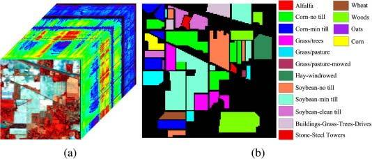

Publications · IEEE ECCE 2019
A Comparison of Supervised and Unsupervised Dimension Reduction Methods for Hyperspectral Image Classification
International Conference on Electrical, Computer and Communication Engineering (ECCE) 2019, 7–9 February 2019. IEEE, pp. 1–6.
PCA ignores class labels; LDA is built around them. Head to head on the Indian Pines scene, LDA holds up best on the held-out test set, from eight features, a 96.4% cut in dimensionality. Combining the two helps neither.
Part of the project Dimensionality Reduction for Hyperspectral Imaging
At a glance
- LDA, independent test86.43 %Best held-out result — from 8 features
- PCA, independent test83.98 %21 features, ~99% of variance
- PCA + LDA combined82.65 %29 features — worse than either alone
- Dimensionality cut96.4 %LDA: 220 bands → 8 features
The two methods
Both are feature extraction: they build new features rather than picking existing bands. The difference is whether the class labels get a vote.
PCA — unsupervised
Maximises variance
- Finds a linear basis that keeps as much variance as possible
- 21 components cover almost 99% of the variance, a 90.45% reduction
- Blind to class labels, so nothing guarantees class separability
LDA — supervised
Maximises class separability
- Maximises between-class variance while minimising within-class variance
- Capped at c − 1 features, so 8 for nine classes, a 96.36% reduction
- Uses first- and second-order statistics of the labelled classes
Results
Nine of the sixteen ground-truth classes were used; the rest had too few training samples. Splits were identical across methods: 50% training, 30% independent test, 20% cross-validation, with c and σ grid-searched over five runs per method.
Three accuracy measures, three methods
OA counts every correctly classified pixel; AA averages the nine per-class accuracies; ITA is the held-out independent test set. LDA leads where it counts most, on unseen data. The axis starts at 81%, not zero.
- Overall accuracy
- Average accuracy
- Independent test accuracy
Data table
| Method | Features | Overall | Average | Independent test |
|---|---|---|---|---|
| PCA | 21 | 85.75% | 84.10% | 83.98% |
| LDA | 8 | 84.91% | 85.07% | 86.43% |
| PCA + LDA | 29 | 82.59% | 82.59% | 82.65% |
Per-class accuracy
LDA is stronger on the harder corn and soybean classes; PCA holds a clear edge only on Soybean-mintill. The axis starts at 60%, not zero.
- PCA
- LDA
- PCA + LDA
Data table
| Class | Train px | Test px | PCA | LDA | PCA + LDA |
|---|---|---|---|---|---|
| Corn-notill | 714 | 428 | 75.87% | 81.18% | 74.47% |
| Corn-mintill | 415 | 249 | 68.07% | 75.90% | 63.25% |
| Grass-pasture | 241 | 145 | 93.81% | 95.87% | 94.84% |
| Grass-trees | 365 | 219 | 98.63% | 98.87% | 100.00% |
| Hay-windrowed | 239 | 143 | 98.95% | 100.00% | 100.00% |
| Soybean-notill | 486 | 292 | 76.92% | 77.95% | 68.20% |
| Soybean-mintill | 1227 | 736 | 84.72% | 77.80% | 85.33% |
| Soybean-clean | 296 | 178 | 73.10% | 79.83% | 62.18% |
| Woods | 632 | 379 | 98.42% | 98.81% | 98.41% |
| Overall | 85.75% | 84.91% | 82.59% | ||
| Average | 84.10% | 85.07% | 82.59% | ||
| Independent test | 83.98% | 86.43% | 82.65% |
Figures from the paper

Takeaway
Supervision pays where it matters. LDA generalises best to the independent test set from a third as many features as PCA needs, even though PCA edges it on overall accuracy over the full data.
Concatenating both feature sets is the worst of the three on every measure, so the two reductions are not complementary in this naive form.
The code and data for this study are public: joybi531/multiclass_SVM_classification_using_PCA_LDA.